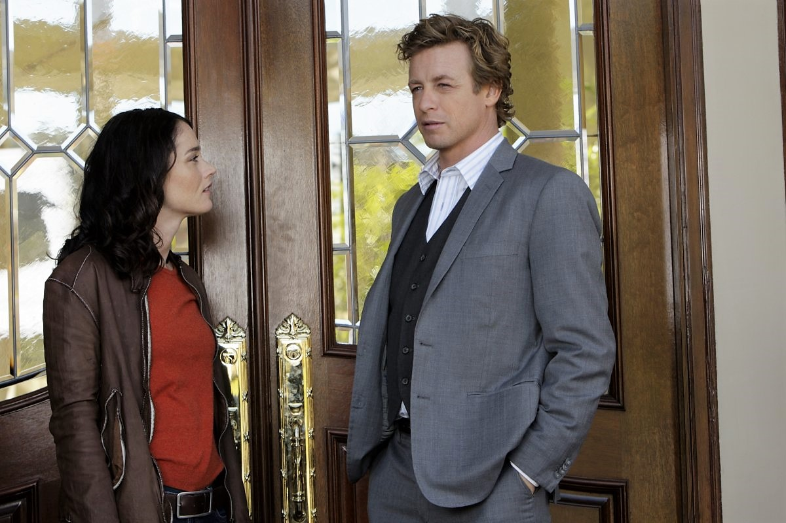
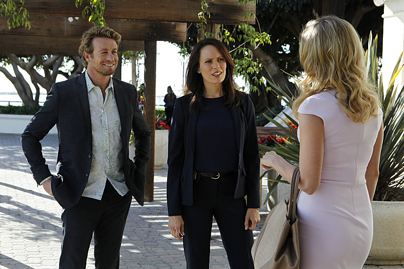
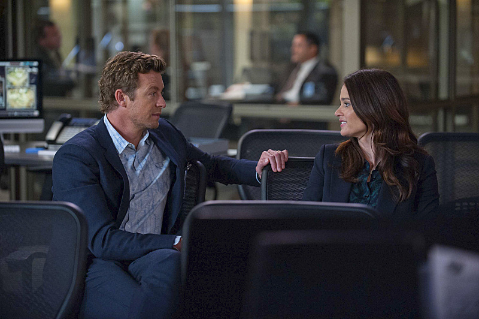
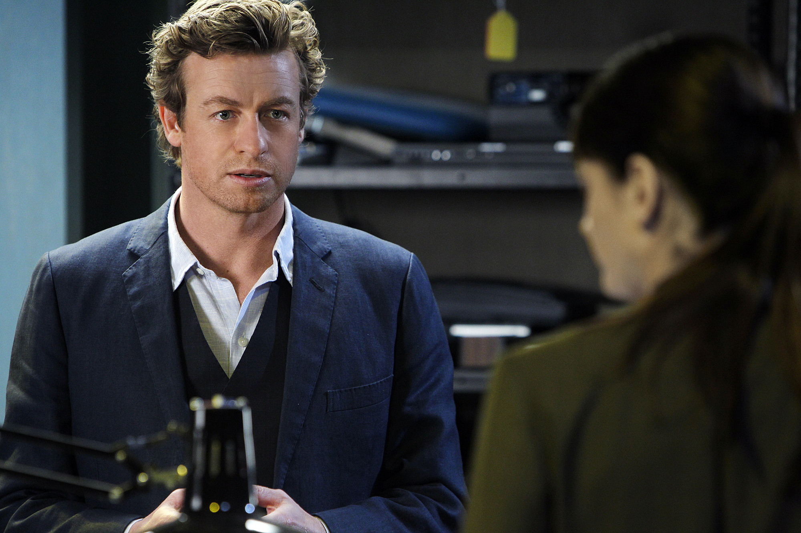
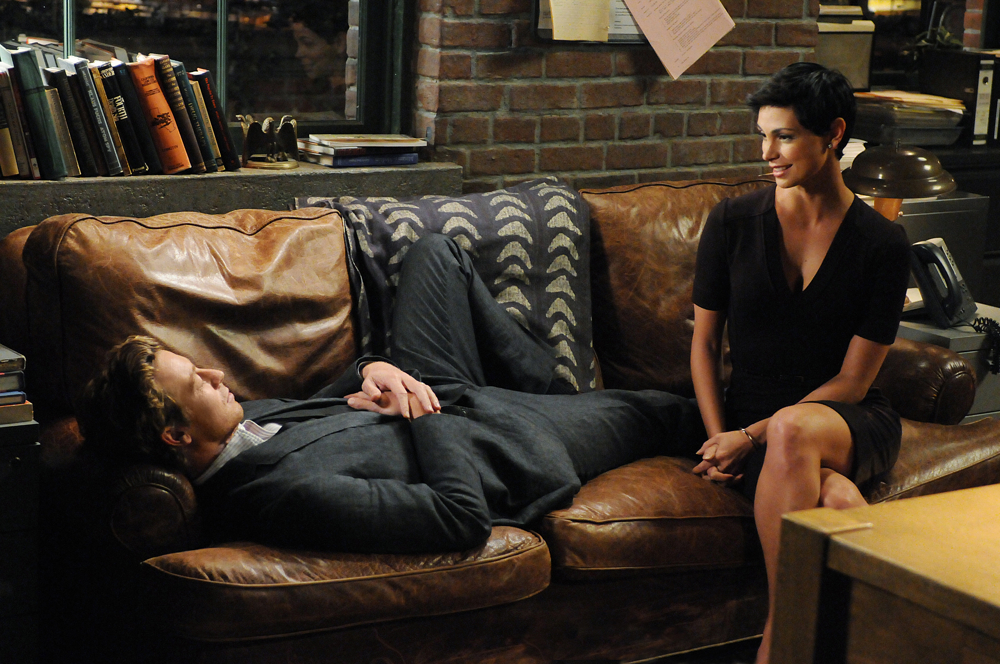
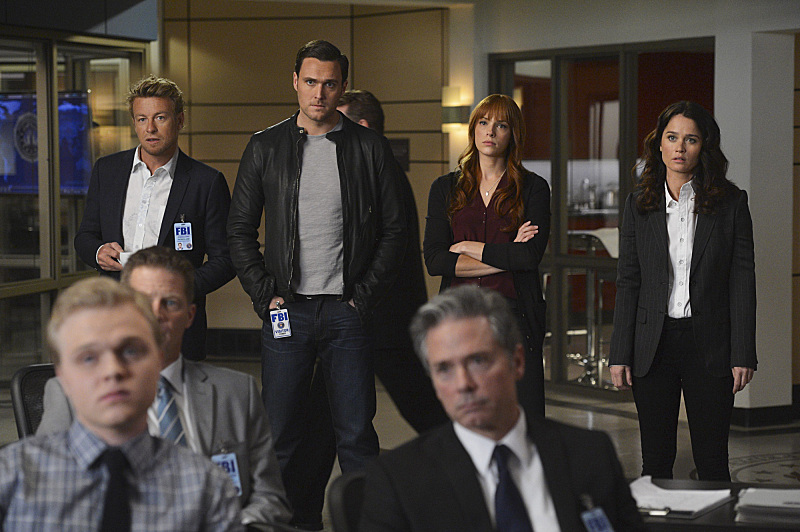
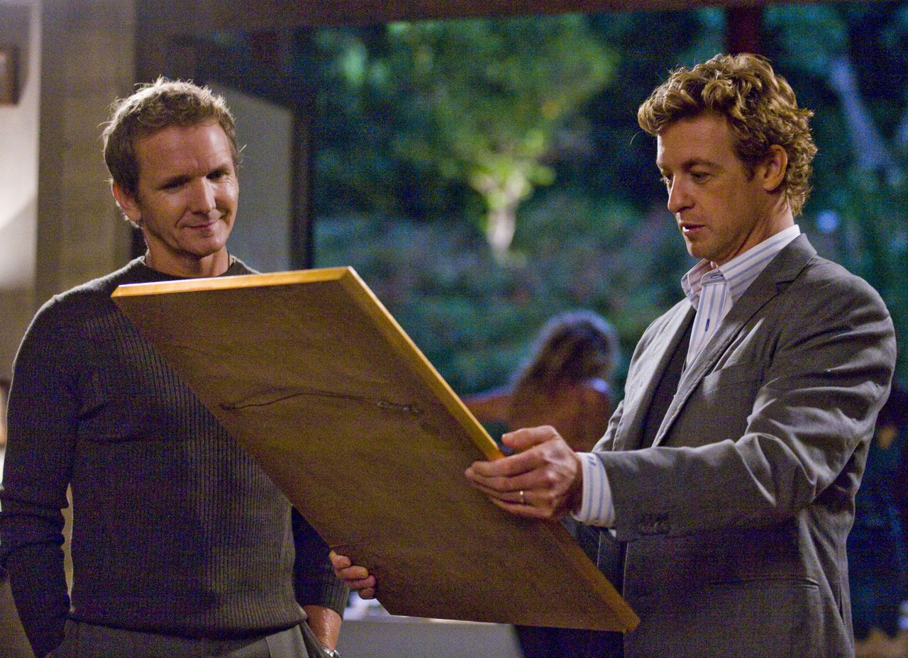
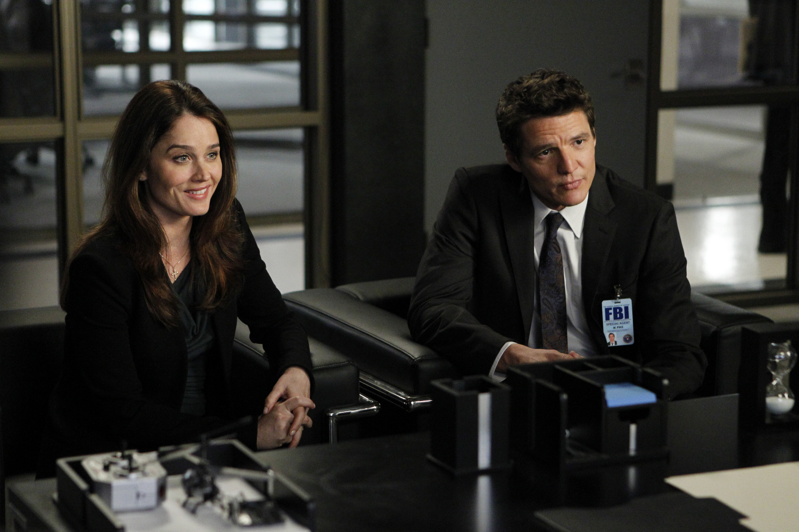
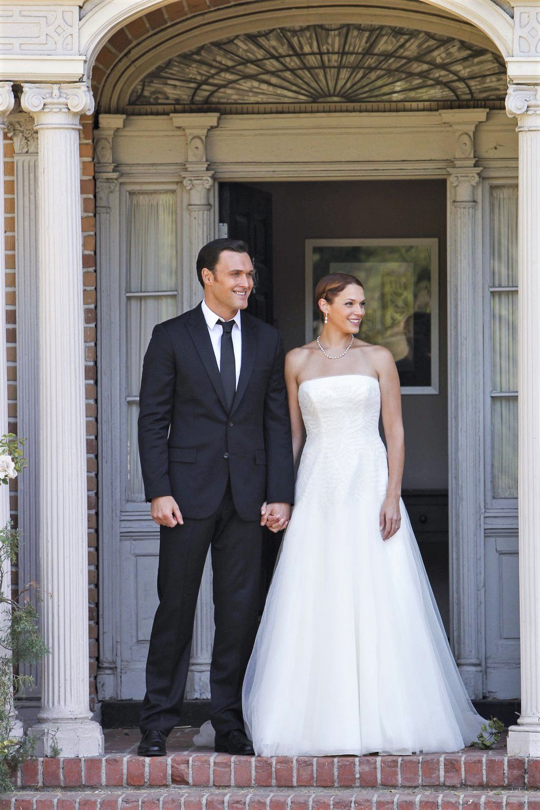

VÍNCULO & DETECTIVES
Jane & Lisbon: Complicidad
Lealtad incondicional entre el consultor y la líder de brigada a través de cientos de homicidios.
Colección fotográfica y expedientes visuales de la saga. Haz clic en cualquier imagen para abrir el visor interactivo en pantalla completa.
Desplázate con los controles interactivos para ver las escenas cinematográficas destacadas o haz clic para abrirlas en pantalla completa.
Lealtad incondicional entre el consultor y la líder de brigada a través de cientos de homicidios.

El rincón de meditación y deducción psicológica donde Jane desarmaba las coartadas más complejas.

El automóvil clásico con suspensión hidroneumática que acompañó a Jane por toda California.

La marca macabra que dio inicio a una cacería obsesiva a lo largo de diez años de venganza.

El momento en que Patrick Jane y Red John coinciden matemáticamente en la lista final.

El susurro poético que reveló la existencia del sindicato clandestino policial de Red John.

El cierre de una década de duelo y la muerte del sheriff Thomas McAllister a manos de Jane.

La reconstrucción emocional de Jane en el FBI y el feliz enlace matrimonial junto a Lisbon.
Explora el catálogo completo con todas las fotos de la serie y nuevos expedientes gráficos. Haz clic en cualquiera para abrirla en alta resolución.








